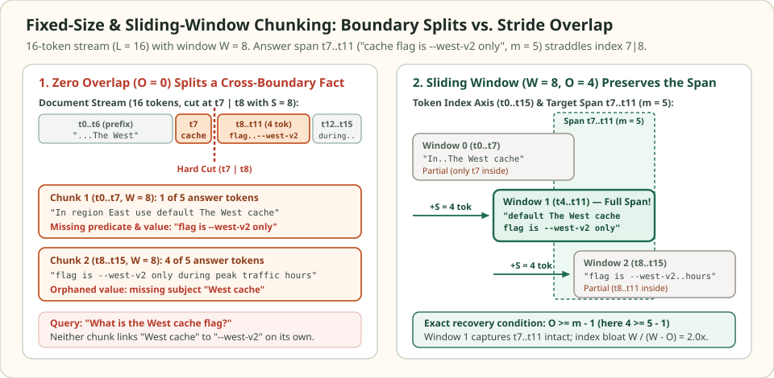

Fixed-size and sliding-window chunking: bound token windows and overlap
Fixed-size chunking slices a tokenized document of length $L$ into windows of $W$ tokens without inspecting syntax, punctuation, or headings. Because its runtime is $O(L)$ and its output length is strictly bounded by $W$, it is the baseline splitter whenever incoming text lacks reliable structural markers—such as raw OCR streams, speech transcripts, or unformatted log dumps.
Its structural flaw is arbitrary boundary placement. When a self-contained fact of length $m$ tokens crosses the cut between two adjacent windows, neither chunk holds both the subject and the predicate. Adding a sliding-window overlap of $O$ tokens (advancing by stride $S = W - O$) repairs any cross-boundary span up to $m \le O + 1$ tokens, at the cost of indexing $\frac{W}{W - O}$ times as many tokens.
When a zero-overlap cut severs the subject from the value
16 tokens · window W = 8 · 5-token answer span
Consider a $16$-token operational note $t_0\dots t_{15}$: In region East use default The West cache flag is --west-v2 only during peak traffic hours. The $5$-token answer span $t_7\dots t_{11}$ (cache flag is --west-v2 only, length $m=5$) straddles the midpoint between $t_7$ and $t_8$.


West cache from --west-v2. Raising overlap to $O=4$ (stride $S=4$) places a shifted window over $t_4\dots t_{11}$ that captures the entire $5$-token span intact.When a user asks "What is the West cache flag?", a retriever scoring disjoint $8$-token windows ($O=0$) sees the entity West cache in the first window and the flag value --west-v2 in the second window without its region name. Introducing an overlap of $O = 4$ tokens shifts the second window to start at $t_4 = S$, covering $t_4\dots t_{11}$ and keeping both the subject and the flag inside a single vector.
Comparison of disjoint windows (W = 8, O = 0, S = 8) and overlapping sliding windows (W = 8, O = 4, S = 4) on the 16-token stream.
| Configuration & chunk ID | Token range | Chunk text | Span tokens (t7..t11) | Answers query alone? |
|---|---|---|---|---|
| O = 0, Chunk 0 | t0..t7 | In region East use default The West cache | 1 / 5 (t7) | No (missing flag value) |
| O = 0, Chunk 1 | t8..t15 | flag is --west-v2 only during peak traffic hours | 4 / 5 (t8..t11) | No (missing West subject) |
| O = 4, Window 0 | t0..t7 | In region East use default The West cache | 1 / 5 (t7) | No (partial prefix) |
| O = 4, Window 1 | t4..t11 | default The West cache flag is --west-v2 only | 5 / 5 (t7..t11) | Yes (intact span + subject) |
| O = 4, Window 2 | t8..t15 | flag is --west-v2 only during peak traffic hours | 4 / 5 (t8..t11) | No (partial suffix) |
Scroll horizontally to compare the columns. Keyboard: focus the table, then use the left and right arrow keys.
Window geometry and the exact span-preservation condition
Given a token sequence $T = (t_0, t_1, \dots, t_{L-1})$ of length $L$, a sliding-window splitter is parameterized by a window size $W \ge 1$ and an overlap $0 \le O < W$. Consecutive windows advance by the stride $S = W - O$, so window $k \ge 0$ spans the half-open index interval $[kS,\, \min(kS + W, L))$ and the total number of emitted chunks for $L > 0$ is:
Suppose a self-contained atomic fact occupies $m$ contiguous tokens ($1 \le m \le W$) starting at index $a$, so it spans $[a,\, a + m - 1]$. It is contained completely inside window $k$ if and only if $kS \le a$ and $a + m \le kS + W$. Choosing $k = \lfloor a / S \rfloor$ writes $a = kS + r$ with remainder $r \in \{0, 1, \dots, S - 1\}$. Window $k$ then covers the entire span whenever $r + m \le W$. Because the worst-case remainder is $r_{\max} = S - 1 = W - O - 1$, every span of length $m$ is guaranteed to appear intact in at least one window if and only if $(W - O - 1) + m \le W$, which simplifies to:
When $O < m - 1$, remainders $r \in \{W - m + 1, \dots, S - 1\}$ cause the span to spill past the right edge of window $k$ while starting before window $k+1$ begins at $(k+1)S$. Under a uniform starting offset $a \bmod S$, the probability that an $m$-token fact is severed across all windows is:
In the opening puzzle ($W = 8$, $m = 5$), setting $O = 0$ leaves $P_{\text{split}}(5, 8, 0) = \frac{4}{8} = 50\%$ of starting offsets broken across the cut, whereas setting $O = 4 = m - 1$ drives $P_{\text{split}}(5, 8, 4)$ to $0$.
| Parameter | Definition | Effect of increasing it |
|---|---|---|
| Window size ($W$) | Maximum tokens per emitted chunk | More surrounding context per chunk, lower boundary-split rate for fixed $m$, but more topic dilution inside a single vector |
| Overlap ($O$) | Tokens shared between window $k$ and window $k+1$ | Guarantees intact recovery for spans up to $m = O + 1$ tokens, but multiplies total indexed vectors by $\frac{W}{W - O}$ |
| Stride ($S = W - O$) | Step size in tokens between consecutive window starts | Fewer chunks and lower storage overhead, at the cost of wider blind spots at window boundaries |
Why character-count windows silently overflow embedding token limits
Every dense embedding model enforces a hard maximum context length $W_{\max}$ measured in subword tokens (for example, $512$ WordPiece or BPE tokens), silently truncating any token at index $\ge W_{\max}$. Many naive pipelines approximate token budgets by splitting on character count (such as $2{,}000$ characters under the rule of thumb that $1$ English token $\approx 4$ characters).
That approximation breaks down whenever token density spikes. Whereas clean English prose averages $3.8$–$4.5$ characters per BPE token, JSON payloads, hex hashes, URLs, stack traces, and minified source code routinely drop to $1.4$–$2.2$ characters per token because punctuation, digits, and camelCase transitions fragment into short subwords. Multi-byte UTF-8 scripts and mathematical notation can exceed $1$ token per character. A $2{,}000$-character block of log lines or code easily expands to $900+$ tokens—causing a $512$-token embedding model to silently discard the bottom $40\%$ of the chunk during indexing while the full unindexed text is still passed to the generator.
Index bloat and merging overlapping windows at retrieval time
For a long document ($L \gg W$), each stride of $S = W - O$ tokens emits a $W$-token window, producing an asymptotic index amplification factor:
A modest $20\%$ overlap ($O / W = 0.20$) inflates embedding compute, vector RAM, and ANN graph size by $1.25\times$; a $50\%$ overlap ($O / W = 0.50$) doubles the index ($2.0\times$).
Overlap also creates a retrieval-time redundancy hazard. Because adjacent windows $[kS, kS+W)$ and $[(k+1)S, (k+1)S+W)$ share $O$ identical tokens, a query matching the shared region will score both windows nearly identically. If a top-$K$ retriever returns $3$ overlapping windows from the same paragraph, up to $2O$ tokens of the LLM prompt budget are spent repeating identical text. Production RAG pipelines therefore store (doc_id, start_token, end_token) metadata on every chunk and merge overlapping or adjacent intervals $[a_i, b_i]$ and $[a_j, b_j]$ (whenever $a_j \le b_i$) into a single deduplicated span $[a_i, \max(b_i, b_j)]$ before assembling the prompt.
import math
tokens = [
"In", "region", "East", "use", "default", "The", "West", "cache",
"flag", "is", "--west-v2", "only", "during", "peak", "traffic", "hours",
]
target_span = ["cache", "flag", "is", "--west-v2", "only"] # t7..t11 (m = 5)
def sliding_windows(seq, W, O):
assert 0 <= O < W
S = W - O
if len(seq) <= W:
return [(0, len(seq), seq[:])]
n_chunks = 1 + math.ceil((len(seq) - W) / S)
return [
(k * S, min(k * S + W, len(seq)), seq[k * S : k * S + W])
for k in range(n_chunks)
]
def contains_subsequence(window_tokens, subseq):
m = len(subseq)
return any(window_tokens[i : i + m] == subseq for i in range(len(window_tokens) - m + 1))
# 1. Verify the 16-token boundary puzzle (W = 8, O = 0 vs O = 4)
w_disjoint = sliding_windows(tokens, W=8, O=0)
assert len(w_disjoint) == 2
assert not any(contains_subsequence(chunk, target_span) for _, _, chunk in w_disjoint)
w_overlap = sliding_windows(tokens, W=8, O=4)
assert [(s, e) for s, e, _ in w_overlap] == [(0, 8), (4, 12), (8, 16)]
assert contains_subsequence(w_overlap[1][2], target_span)
# 2. Verify exact span-split probability formula across all cyclic start offsets
def empirical_split_prob(W, O, m):
S = W - O
stream = list(range(S + W + m))
wins = sliding_windows(stream, W=W, O=O)
broken = 0
for a in range(S):
span = stream[a : a + m]
if not any(contains_subsequence(c, span) for _, _, c in wins):
broken += 1
return broken / S
for O_test in range(0, 8):
expected = max(0, (5 - 1) - O_test) / (8 - O_test)
assert math.isclose(empirical_split_prob(W=8, O=O_test, m=5), expected)
# 3. Deduplicate overlapping retrieved windows before LLM context assembly
def merge_retrieved_windows(seq, intervals):
ordered = sorted(intervals, key=lambda iv: (iv[0], iv[1]))
merged = [list(ordered[0])]
for start, end in ordered[1:]:
if start <= merged[-1][1]:
merged[-1][1] = max(merged[-1][1], end)
else:
merged.append([start, end])
return [(s, e, " ".join(seq[s:e])) for s, e in merged]
merged_ctx = merge_retrieved_windows(tokens, [(4, 12), (8, 16)])
assert merged_ctx == [(4, 16, "default The West cache flag is --west-v2 only during peak traffic hours")]
print("Window 1 text:", " ".join(w_overlap[1][2]))
print("Merged context (12 tokens instead of 16):", merged_ctx[0][2])Check the operating assumptions
Does increasing overlap O to 50% of W prevent a chunk from mixing two unrelated paragraphs?
No. Overlap only adds shifted windows; it never aligns window edges with heading or paragraph boundaries. Every window still spans exactly W consecutive tokens, so any window crossing a section break blends both topics into a single embedding vector.
What overlap O is required to guarantee that every 12-token sentence appears intact inside at least one window of size W = 256?
By the exact preservation condition O >= m - 1, an overlap of O = 12 - 1 = 11 tokens is both necessary and sufficient regardless of whether W is 64 or 256, provided W >= 12.
Why can retrieving the top-5 chunks with 50% overlap reduce answer quality compared to retrieving top-5 merged spans?
When adjacent windows share half their tokens, a single high-scoring passage can occupy 2 or 3 of the top-5 slots with nearly identical text. Without merging overlapping intervals [a_i, b_i] prior to applying the context token budget, duplicate tokens crowd out distinct supporting evidence from lower-ranked documents.
Sources
- Lewis et al.: Retrieval-Augmented Generation for Knowledge-Intensive NLP Tasks, NeurIPS 2020 (fixed-length 100-word Wikipedia passage splitting baseline).
- Karpukhin et al.: Dense Passage Retrieval for Open-Domain Question Answering, EMNLP 2020 (disjoint vs. strided passage windows in dense retrieval).
- OpenAI tiktoken, fast BPE tokenization for measuring exact model token budgets.